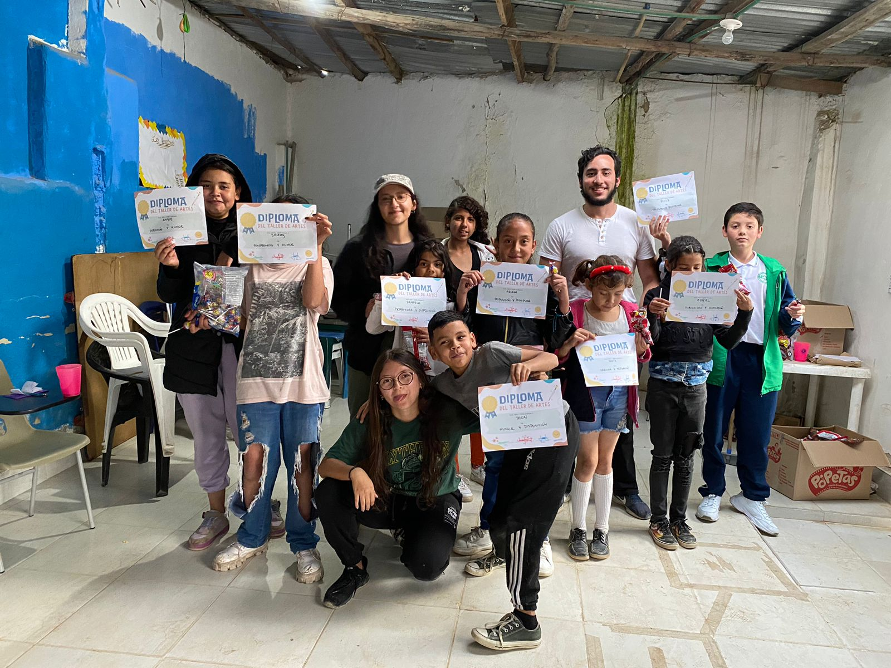
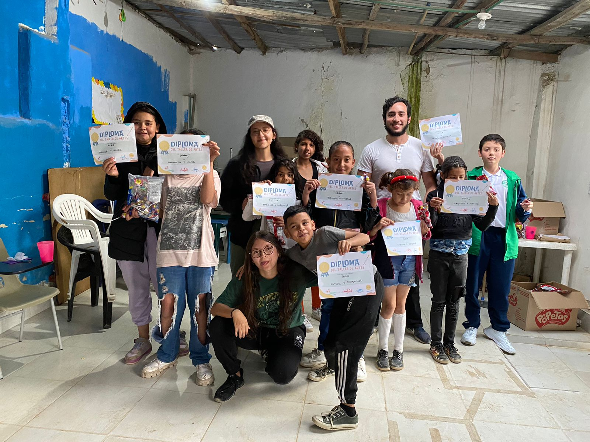
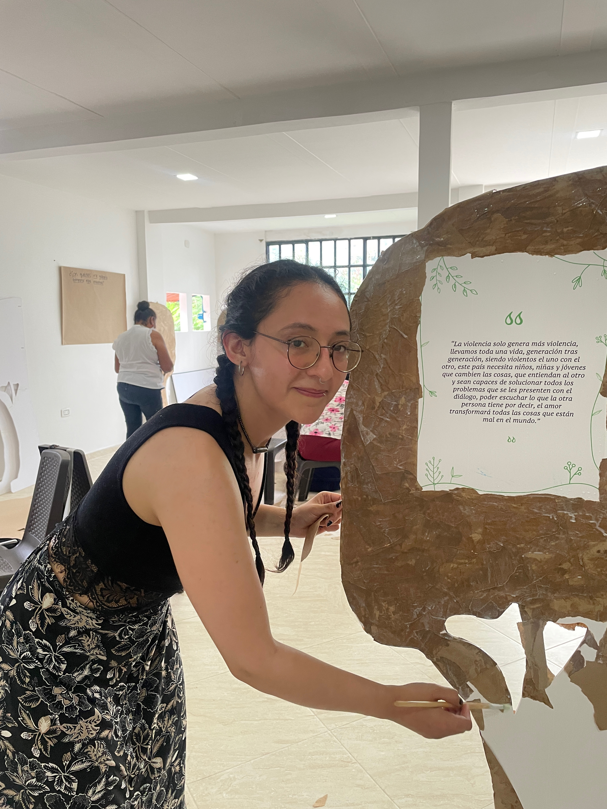
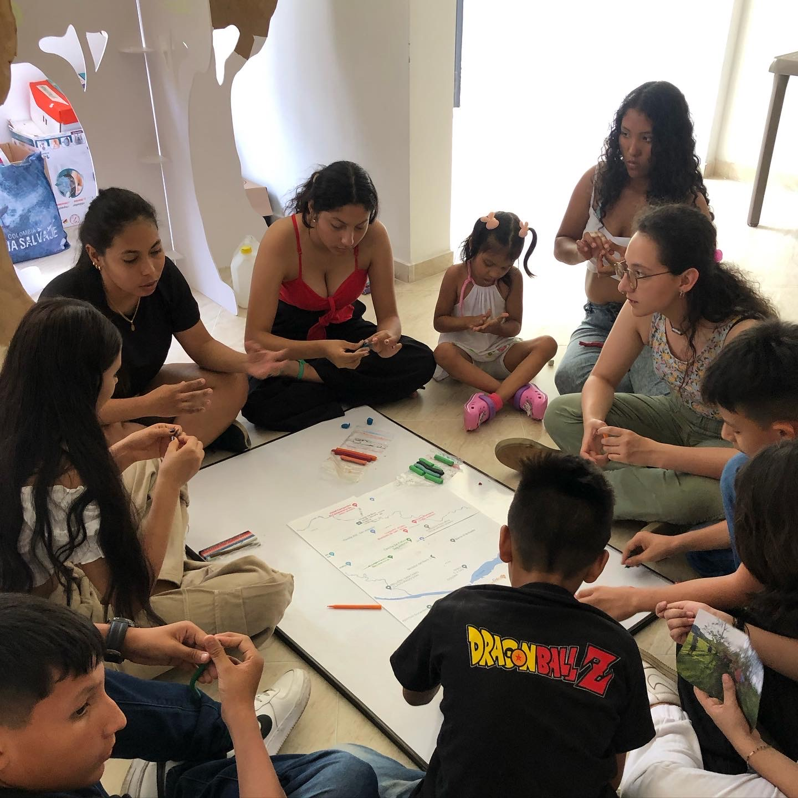
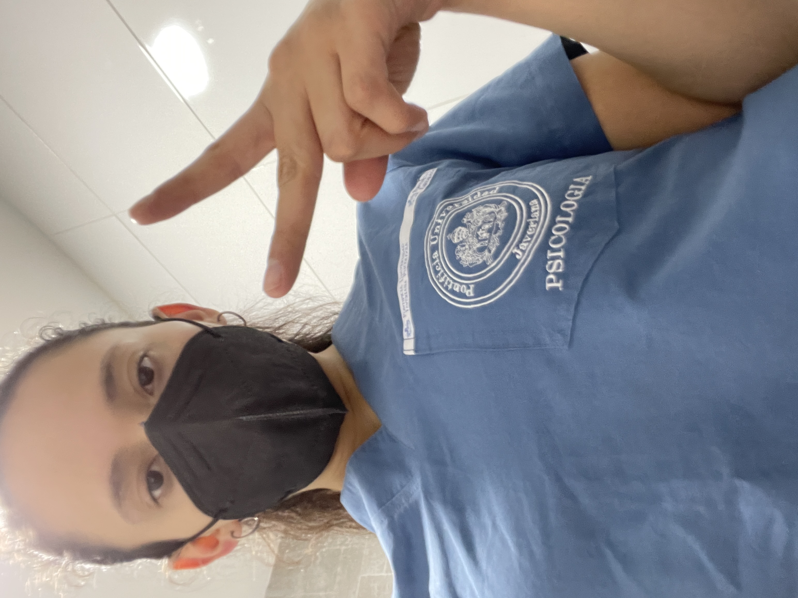

Mi experiencia
Realicé mis prácticas en una fundación en Soacha, Cundinamarca. Esta labor psicosocial estaba inscrita en la práctica de Violencia Sociopolítica. Tuvimos talleres de arte y psicología con niñxs de 4 a 15 años.
fue una experiencia enriquecedora, en dónde me di cuenta de la importancia de la información, de cuántas personas están trabajando y dando su vida por las demás.
 

Ese mismo año, 2023, estuve en una corporación que trabaja con víctimas del conflicto armado en el país. Tienen distintas sedes en sitios de alta vulnerabilidad. Yo tuve la oportunidad de trabajar en Villavicencio, con mujeres y jóvenes, respecto a un tema que me apasiona profundamente: las culturas de paz. Allí aprendí de la fortaleza de las personas, que aún después del dolor son capaces de seguir soñando con un país mejor, y construir paz se hace desde adentro.
 En el primer semestre de 2024 estuve en el Hospital Universitario. Allí fortalecí mis habilidades clínicas con madres en la unidad de recién nacidos, y personas en el piso de psiquiatría. Comprendí cuál es el papel de la psicología en estos espacios, además de entender que la psicoterapia es un espacio en que las personas pueden afrontar las situaciones difíciles de su vida.
Estuve participando en la sistematización de un proyecto de Minciencias en Montes de María. Una investigación hecha por distintas universidades nacionales e internacionales en donde se revelaron aspectos clave para la formulación de políticas públicas de salud mental, en sitios históricamente vulnerados por el conflicto y la violencia.